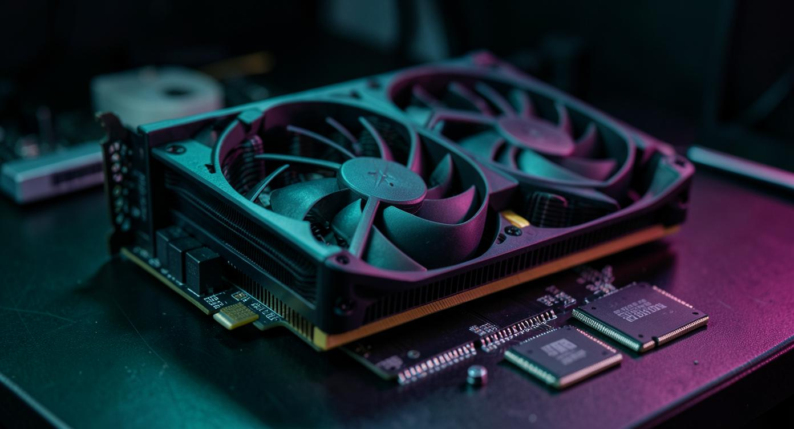
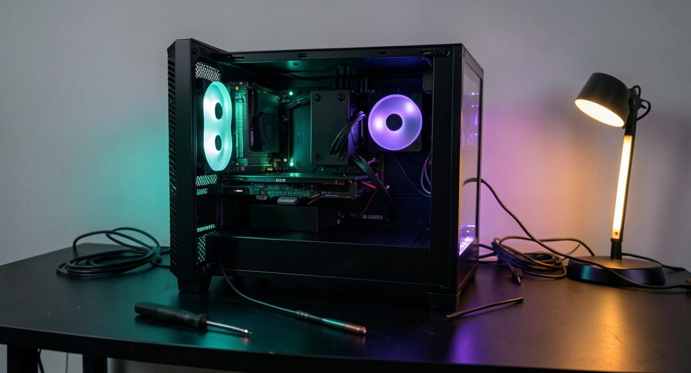
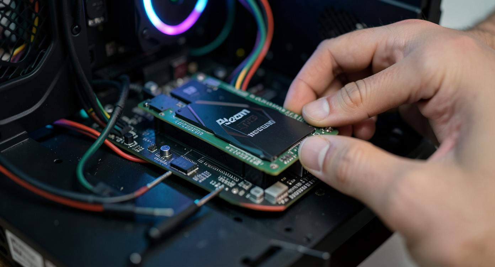

AMD Radeon RX 9000 Price Hike: RX 9070 XT, 9070 aur 9060 XT India Me Kitna Mehnga?

AMD Radeon RX 9000 सीरीज़ खरीदने का प्लान बनाने वालों के लिए एक नई खबर आई है। अक्टूबर 2026 के आखिर में Club386 और Zerocade की रिपोर्ट्स में कहा गया कि AMD अपने ग्राफिक्स कार्ड पार्टनर्स से GPU और GDDR6 मेमोरी के कॉम्बो का दाम बढ़ा सकता है। यानी असर सीधे आपके और मेरे जैसे ग्राहक तक पहुँच सकता है — RX 9070 XT, RX 9070 और RX 9060 XT जैसे लोकप्रिय कार्ड्स पर।
लेकिन खबर को पूरा पढ़े बिना नतीजा मत निकालिए। यह AMD की आधिकारिक कीमत बढ़ोतरी नहीं है, बल्कि सप्लाई चेन की रिपोर्ट है। इसका मतलब है कि बाजार में जो कीमतें दिखेंगी, वे धीरे-धीरे और हर ब्रांड के हिसाब से अलग-अलग बदल सकती हैं। नीचे मैं पूरी तस्वीर समझा रहा हूँ — रिपोर्ट क्या कहती है, भारत में कीमतों का क्या हाल है, कौन से कार्ड प्रभावित हैं और आपको क्या करना चाहिए।
छोटा जवाब: रिपोर्ट के मुताबिक AMD अपने पार्टनर्स को GPU + GDDR6 मेमोरी का कॉम्बो महंगा दे सकता है, क्योंकि Q3 2026 में GDDR6 की लागत 8-10% बढ़ी है। इसका असर RX 9070 XT 16GB, RX 9070 16GB और RX 9060 XT 16GB पर पड़ सकता है। भारत में 31 अक्टूबर तक की रिटेल कीमतें लगभग ₹1,09,220, ₹90,199 और ₹71,920 थीं, पर ये पक्की नहीं हैं। अगर आपको कार्ड की ज़रूरत अभी है, तो स्टॉक और कीमत की तुलना करके खरीदें; वरना कुछ हफ्ते रुककर असली रिटेल असर देख लें।
रिपोर्ट में असल में क्या कहा गया?
30 और 31 अक्टूबर 2026 की रिपोर्ट्स के मुताबिक AMD अपने ग्राफिक्स कार्ड मैन्युफैक्चरिंग पार्टनर्स (जिन्हें AIB पार्टनर कहते हैं) से GPU और मेमोरी के बंडल का दाम बढ़ा सकता है। वजह बताई गई — तीसरी तिमाही 2026 में GDDR6 मेमोरी की कीमत 8-10% बढ़ी। जब मेमोरी महंगी होती है, तो उसका असर पूरे कार्ड की लागत पर पड़ता है।
ध्यान देने वाली बात यह है कि यह "कंपनी ने नया MRP घोषित किया" वाली खबर नहीं है। यह सप्लाई चेन के स्तर की जानकारी है — AMD अपने पार्टनर्स से ज़्यादा पैसे माँग सकता है, और पार्टनर्स वह बोझ आगे रिटेलर तक भेज सकते हैं। इसलिए असली असर की मात्रा और समय दोनों अनिश्चित हैं।
कौन से कार्ड प्रभावित हो सकते हैं?
- Radeon RX 9070 XT 16GB — हाई-एंड गेमिंग का सबसे लोकप्रिय RDNA 4 कार्ड।
- Radeon RX 9070 16GB — थोड़ा कम क्लॉक, वही 16GB मेमोरी।
- Radeon RX 9060 XT 16GB — मिड-रेंज में 16GB VRAM देने वाला कार्ड, जिसकी डिमांड अचानक बढ़ी है।
इन तीनों में 16GB GDDR6 मेमोरी है, इसलिए मेमोरी की कीमत बढ़ने का असर इन पर सबसे सीधा पड़ेगा। 8GB वाले कार्ड पर असर कम होगा, क्योंकि उनमें मेमोरी की मात्रा ही कम है।
भारत में अभी कीमतों का क्या हाल है?
31 अक्टूबर 2026 को PrimeABGB की लिस्टिंग पर जो कीमतें दिखीं, वे इस प्रकार थीं। याद रखें, ये स्नैपशॉट हैं — लाइव कीमत नहीं, और स्टॉक के हिसाब से बदल सकती हैं।
| ग्राफिक्स कार्ड | लगभग कीमत | किसके लिए ठीक |
|---|---|---|
| Radeon RX 9070 XT 16GB | ₹1,09,220 | 1440p हाई-रेट और 4K एंट्री |
| Radeon RX 9070 16GB | ₹90,199 | 1440p हाई सेटिंग |
| Radeon RX 9060 XT 16GB | ₹71,920 | 1440p मीडियम-हाई, 1080p हाई |
इन कीमतों को देखकर लगता है कि भारत में RX 9000 सीरीज़ पहले से ही प्रीमियम बैंड में बैठी है। अगर रिपोर्ट सही निकली और 5-10% और बढ़ोतरी हुई, तो RX 9070 XT ₹1.15 लाख के आसपास पहुँच सकता है। यह वह कीमत है जहाँ खरीदार गंभीरता से सोचने लगता है कि "क्या इतना देना सही है?"

GDDR6 महंगी क्यों हो रही है?
तीन कारण हैं। पहला, AI सर्वर और डेटा सेंटर मेमोरी की बड़ी मात्रा खा रहे हैं, जिससे फैक्ट्रियों की प्राथमिकता बदल गई है। दूसरा, GDDR6 पुरानी तकनीक है — निर्माता अब GDDR7 और HBM पर ध्यान दे रहे हैं, इसलिए GDDR6 की नई लाइनें कम लग रही हैं। तीसरा, कच्चे माल और लॉजिस्टिक्स की लागत भी बढ़ी है।
जब कोई कंपोनेंट पुराना हो रहा हो और उसकी डिमांड अचानक बढ़ जाए, तो कीमत तेज़ी से ऊपर जाती है। यही GDDR6 के साथ हो रहा है।
AMD का यह कदम कितना बड़ा होगा?
यह सबसे ज़रूरी सवाल है और इसका सीधा जवाब है — पता नहीं। रिपोर्ट में सिर्फ इतना कहा गया है कि AMD पार्टनर्स से ज़्यादा चार्ज कर सकता है। इसका मतलब यह नहीं कि हर दुकान में हर कार्ड कल से महंगा हो जाएगा। कई बार पार्टनर्स अपना मार्जिन कम करके कीमत स्थिर रखते हैं, कई बार पुराना स्टॉक पहले बिकता है और नई कीमत बाद में लागू होती है।
इसलिए खरीदारी का फैसला "खबर" पर नहीं, "दुकान पर लिखी कीमत" पर करें। अगर आपको आज कार्ड ₹5,000 सस्ता मिल रहा है और ज़रूरत भी है, तो ले सकते हैं। अगर दुकानदार कह रहा है "कल से 10% बढ़ जाएगा, आज ले लो" — तो यह बिक्री का तरीका भी हो सकता है।
RX 9070 XT किसके लिए सही है?
RX 9070 XT 16GB उन लोगों के लिए है जो 1440p में हाई रिफ्रेश रेट पर गेम खेलते हैं और 4K में भी घुसना चाहते हैं। 16GB VRAM आज के भारी गेम्स में मदद करती है, खासकर टेक्सचर हेवी टाइटल्स में। AMD का FSR 4 अपस्केलिंग का अच्छा विकल्प है और रास्टर परफॉर्मेंस इस कीमत पर मजबूत मानी जाती है।
NVIDIA से तुलना कैसे करें?
सीधा जवाब: अपने खेल और अपने काम से तुलना करें। अगर आप रे ट्रेसिंग, DLSS और CUDA आधारित काम (जैसे AI, 3D रेंडर) पर निर्भर हैं, तो NVIDIA आगे रहेगा। अगर आप ज़्यादातर रास्टर गेमिंग करते हैं और वही पैसे में ज़्यादा VRAM चाहते हैं, तो AMD ठीक है। किसी एक ब्रांड के "फैन" बनकर फैसला न करें — अपने खेल के बेंचमार्क देखें।

खरीदने से पहले 7 चीज़ें चेक करें
- ब्रांड पार्टनर: Sapphire NITRO+, ASUS Dual, Gigabyte Gaming OC जैसे मॉडल की कूलिंग और वारंटी अलग होती है। सिर्फ चिप नहीं, बोर्ड भी देखें।
- केस में जगह: ये कार्ड लंबे और मोटे होते हैं। अपने केस की अधिकतम GPU लंबाई नाप लें।
- PSU: 750W से 850W की अच्छी क्वालिटी वाली सप्लाई सुरक्षित रहेगी। सस्ता 650W हाई-एंड कार्ड के साथ मत चलाइए।
- कनेक्टर: नए कार्ड में 12V-2x6 या कई 8-pin कनेक्टर चाहिए होते हैं। अपने PSU के केबल पहले देख लें।
- वारंटी: भारत में 3 साल की वारंटी और सर्विस सेंटर की उपलब्धता पूछें।
- बिल: GST बिल लें, वरना क्लेम में दिक्कत आएगी।
- कीमत की तुलना: कम से कम तीन रिटेलर के दाम देखें — PrimeABGB, MD Computers, Vedant और लोकल दुकान।
अभी खरीदें या इंतज़ार करें?
यह इस बात पर निर्भर है कि आपके पास अभी क्या है। अगर आपके पास 1080p में ठीक चलने वाला कार्ड है और आप सिर्फ "अपग्रेड की इच्छा" से खरीद रहे हैं, तो इंतज़ार करें। रिपोर्ट के असर को साफ होने में कुछ हफ्ते लगेंगे और तब तक आपको असली बाजार की तस्वीर मिल जाएगी।
अगर कार्ड खराब है या आपका काम रुका हुआ है, तो इंतज़ार करने का कोई फायदा नहीं। ऐसे में अपने बजट में सबसे अच्छा उपलब्ध मॉडल ले लें, बशर्ते कीमत तीन दुकानों पर लगभग एक जैसी हो।
| स्थिति | फैसला |
|---|---|
| पुराना कार्ड ठीक है | इंतज़ार करें |
| कार्ड खराब, काम रुका | आज खरीदें, पर मोलभाव करें |
| नया PC बना रहे हैं | पहले बाकी पार्ट्स तय करें, फिर GPU |
| सिर्फ गेम के लिए जल्दी | पहले गेम की ज़रूरत देखें |
मेरा नज़रिया
RDNA 4 को लेकर जो उम्मीद थी — "AMD वापस कीमत में मुकाबला करेगा" — वह इस साल पूरी नहीं हो पाई। कार्ड अच्छे हैं, 16GB VRAM अच्छी बात है, लेकिन भारतीय कीमतें इतनी ऊपर हैं कि "value" का तर्क कमज़ोर पड़ जाता है। अब मेमोरी की लागत बढ़ने की खबर उसी तर्क को और कमज़ोर करती है।
मेरी सलाह है कि आप "कल और महंगा हो जाएगा" के डर में न खरीदें। GPU एक ऐसी चीज़ है जिसकी कीमत सप्लाई के साथ ऊपर-नीचे होती रहती है। जो लोग डरकर खरीदते हैं, वे अक्सर ज़्यादा देते हैं। जो लोग अपनी ज़रूरत तय करके खरीदते हैं, वे संतुष्ट रहते हैं।
RX 9060 XT 16GB या RX 9070 — किसे क्या चाहिए?
दोनों कार्ड में 16GB मेमोरी है, लेकिन ताकत और कीमत में फर्क है। सही चुनाव इस बात पर निर्भर करता है कि आप किस रिज़ॉल्यूशन पर खेलते हैं और कितना बजट है।
1080p गेमर
अगर आप 1080p पर हाई सेटिंग खेलते हैं, तो RX 9060 XT 16GB से ज़्यादा की ज़रूरत नहीं। यह कार्ड लंबे समय तक चलेगा और बजत भी बचाएगा। बचे पैसे मॉनिटर या SSD पर लगाना ज़्यादा समझदारी है।
1440p गेमर
1440p हाई रिफ्रेश रेट के लिए RX 9070 XT बेहतर है। इसमें ज़्यादा कंप्यूट यूनिट्स हैं और भारी गेम्स में फ्रेम स्थिर रहते हैं। अगर आप नए ट्रिपल-A गेम्स खेलते हैं, तो यह कार्ड लंबे समय तक संतुष्ट रखेगा।
क्रिएटर और एडिटर
वीडियो एडिटिंग और 3D में NVIDIA का सॉफ्टवेयर सपोर्ट अभी भी ज़्यादा मज़बूत है। AMD भी अच्छा काम करता है, लेकिन अगर आपका रोज़ का काम Premiere, Blender या AI टूल्स पर है, तो पहले उन टूल्स का सपोर्ट चेक करें।
वारंटी और RMA: भारत में क्या ध्यान रखें
₹1 लाख का कार्ड खरीदना आसान है, पर खराब होने पर सर्विस पाना मुश्किल हो सकता है। भारत में हर ब्रांड का सर्विस नेटवर्क एक जैसा नहीं है। कुछ ब्रांड खुद RMA संभालते हैं, कुछ डिस्ट्रीब्यूटर के भरोसे छोड़ देते हैं।
- इनवॉइस: बिना बिल वारंटी नहीं मिलेगी। बिल पर सीरियल नंबर मिलाएँ।
- सर्विस सेंटर: अपने शहर या नज़दीकी शहर में सर्विस सेंटर है या नहीं, पहले पता करें।
- वारंटी की अवधि: 2 साल से 3 साल तक के ऑफर अलग-अलग मॉडल में मिलते हैं।
- रेफर्बिश्ड: अगर रेफर्बिश्ड ले रहे हैं, तो उसकी अलग वारंटी होती है — लिखित में लें।
एक और बात, कार्ड लगाने से पहले PSU की क्वालिटी जाँचें। बहुत सी “कार्ड खराब हो गया” वाली शिकायतें असल में सस्ते PSU की वजह से होती हैं।
सेकंड-हैंड मार्केट का विकल्प
अगर बजट सीमित है, तो अच्छी हालत में मिला पुराना RX 7000 सीरीज़ कार्ड भी विकल्प हो सकता है। लेकिन खरीदने से पहले कार्ड को चलाकर देखें — फैन की आवाज़, तापमान और आर्टिफैक्ट्स (स्क्रीन पर अजीब रेखाएँ) जाँचें।
माइनिंग में इस्तेमाल हुए कार्ड का दाम कम होना चाहिए, क्योंकि फैन और थर्मल पेस्ट खराब हो सकते हैं। बिना बिल और बिना टेस्ट किया कार्ड मत लीजिए, चाहे दाम कितना ही अच्छा लगे।
क्या 8GB वाला कार्ड भी विकल्प है?
अगर बजट बहुत तंग है और आप 1080p पर ही खेलते हैं, तो 8GB वाला कार्ड भी काम चला सकता है। लेकिन दो बातें याद रखें — पहली, आज के कई नए गेम्स 8GB में टेक्सचर की कमी महसूस कराते हैं और सेटिंग कम करनी पड़ती है। दूसरी, 8GB कार्ड का रीसेल वैल्यू भी कम होता है। अगर 5-6 हज़ार रुपये का फर्क सहन कर सकते हैं, तो 16GB वाला मॉडल लंबे समय में बेहतर साबित होता है।
अक्सर पूछे जाने वाले सवाल
क्या AMD ने आधिकारिक तौर पर कीमत बढ़ाई है?
नहीं। यह सप्लाई चेन की रिपोर्ट है। AMD ने भारत में नया MRP घोषित नहीं किया है।
RX 9070 XT अभी लेना चाहिए?
अगर आपको 1440p हाई-रेट गेमिंग के लिए कार्ड चाहिए और बजट है, तो ले सकते हैं। पर पहले तीन रिटेलर के दाम और स्टॉक चेक करें।
16GB VRAM कितने साल चलेगी?
1440p में आने वाले 3-4 साल के लिए ठीक मानी जा सकती है। 4K में टेक्सचर हेवी गेम्स के लिए यह आज भी सीमा पर है।
क्या FSR 4 हर गेम में काम करता है?
नहीं, हर गेम में नहीं। सपोर्टेड गेम्स की लिस्ट देखें और अपने पसंदीदा टाइटल में इसका सपोर्ट चेक करें।
क्या इंतज़ार करने से कीमत कम होगी?
पक्का नहीं। मेमोरी की सप्लाई सुधरी तो कीमतें नरम पड़ सकती हैं, वरना और बढ़ सकती हैं। इसलिए फैसला अपनी ज़रूरत पर करें, अंदाज़े पर नहीं।
निष्कर्ष
AMD Radeon RX 9000 सीरीज़ अच्छे कार्ड हैं, लेकिन कीमत अब एक और अनिश्चितता से गुज़र रही है। रिपोर्ट को डर की तरह न पढ़ें, बल्कि जानकारी की तरह पढ़ें — GDDR6 महंगी हो रही है और वह असर कार्ड की कीमत में आ सकता है। अपनी ज़रूरत, बजट और स्टॉक तीनों देखकर फैसला करें। जल्दबाजी में लिया गया कार्ड महीनों तक पछतावा दे सकता है, और सोच-समझकर लिया गया कार्ड सालों तक अच्छा चलेगा।
स्रोत: Club386, 30 अक्टूबर 2026 · Zerocade, 31 अक्टूबर 2026
कीमतें रिटेल लिस्टिंग के स्नैपशॉट हैं और बदल सकती हैं। खरीदने से पहले ताज़ा दाम और स्टॉक ज़रूर जाँचें।